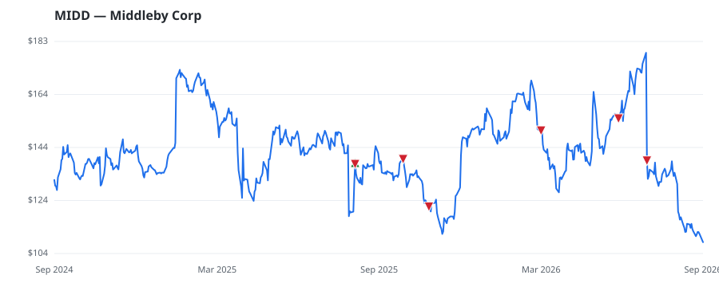

bullish · bearish · n/a — dots: price>SMA10 · SMA10>SMA50 · SMA50>SMA200 · up>down volume (20d)
Capital Goods · mid cap
Members who bought MIDD earned a dollar-weighted -19.0% from their disclosure dates, versus +19.4% for the S&P 500 over the same holding windows (-38.4% alpha).

▲ green = a disclosed purchase · ▼ red = a disclosed sale (plotted on disclosure date)
The Middleby Corp is engaged in designing, manufacturing, marketing, distribution and service of a broad line of foodservice equipment used in all types of commercial restaurants and institutional kitchens, food preparation, cooking, baking, chilling and packaging equipment for food processing operations, and premium kitchen equipment including ranges, ovens, refrigerators, ventilation, dishwashers and outdoor cooking equipment used in the residential market. The company conducts its business through three principal business segments namely the Commercial Foodservice Equipment Group, the Food REFRIGERATION & SERVICE INDUSTRY MACHINERY · website
| Revenue | $3.2B | Net income | $719.5M |
|---|---|---|---|
| Operating income | $574.9M | Diluted EPS | $-5.32 |
| Assets | $6.3B | Equity | $2.8B |
| Member | Chamber | Out-performer | Disclosed buys $ | Return on buys |
|---|---|---|---|---|
| Lisa McClain | house | — | $8K | -19.0% |
Disclosed $ figures are bracket midpoints — filings report ranges (e.g. $1,001–$15,000), not exact amounts.